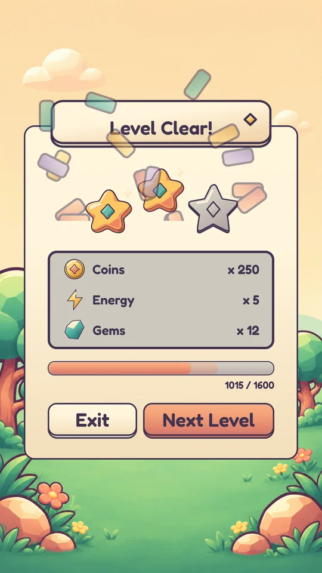
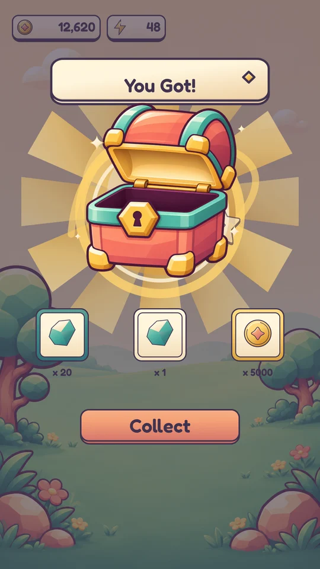

CloverArc for Unity
Motion for
game UI.
We make Unity assets for the moments players tap, collect and level up. Our first package, PopFX, is in development.
Explore PopFX

Unity assets
PopFX
Reward and UI feedback animations for Unity UI (uGUI). PopFX plays motion with its own animation runtime, so it requires no DOTween setup.
- Reward collection
- Send coins from a reward to a HUD counter and bounce the destination as they arrive.
- Popup transitions
- Animate panels in and out with keyframed position, scale and opacity.
- Button feedback
- Give buttons a scale response on press and release.
Talk to CloverArc
Questions about PopFX or using a CloverArc asset in your project?